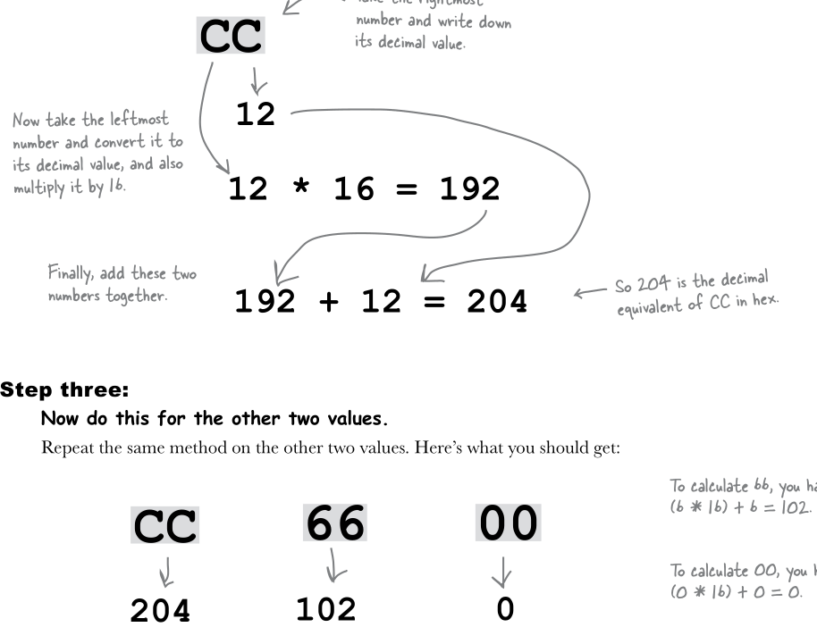

Глава 1
- HTML & CSS – языки, которые мы используем для создания веб-страниц.
- Веб-серверы обслуживают и хранят веб-страницы, которые созданы с помощью HTML & CSS. Браузеры извлекают страницы и визуализируют их содержимое, основанное на HTML & CSS.
- HTML – это аббревиатура Hyper Text Markup Language (язык гипертекстовой разметки). Этот язык используется для структуризации веб-страниц.
- CSS – это аббревиатура Cascading Style Sheets. Он используется для управления отображением HTML.
- Используя HTML, мы помечаем содержимое тегами, чтобы придать ему структуру. Мы называем соответствующие теги и их содержимое элементом.
- Элемент состоит из 3 частей: открывающего тега < , содержимого (того, что стоит между тегами), и закрывающего тега /> .
- В ваших страницах всегда должны присутствовать элемент <html> с элементами <head> и <body> внутри.
- Информация о веб-странице в элемент <head>.
- То, что вы добавляете внутрь <body>, вы видите в браузере!
- Большинство служебных символов (символы табуляции, абзаца, пробелы) игнорируются браузером, но используйте их чтобы сделать ваш код более читабельным!
- В HTML-код веб-страницы можно добавить CSS-код, если поместить правила CSS внутрь элемента <style>. <style> всегда внутри <body>.
- С помощью CSS вы определяете свойства стиля элементов HTML.
Глава 2
- <a>
- Элемент <a> используется для создания ссылки с одной страницы на другую. Она подчёркнута по умолчанию.
- Атрибут href элемента <a> указывает на целевую страницу ссылки.
- В качестве метки ссылки может использоваться текст или изображение.
- Когда вы щёлкаете мышью по ссылке, браузер загружает страницу, которая указана в значении атрибута href.
- Используйте символы «..», чтобы сослаться на файл, который находится в родительской папке (по отношению к папке, где находится файл, с которого вы ссылаетесь).
- Символы «..» означают родительскую папку.
- Не забывайте разделять части пути символом «/».
- Если путь указан неверно, вы увидите отсутствующее изображение.
- Не используйте пробелы в именах ваших папок.
- Ссылка в HTML выглядит примерно так: <a> href="ceny.html"> Цены </a>.
Глава 3
- Планирование страницы начинается с размещения блочных элементов, а затем уточняются строчные.
- <p>, <blockquoter>, <ol>, <ul>, <li>. - блочные элементы. Они всегда стоят обособлено и изображаются так, что перед их содержимым и после него всегда есть свободное пространство.
- <q>, <em>, <a> - строчные элементы. Их содержимое сливается с остальным содержимым элемента, который их включает.
- Используйте <br>, если хотите вставить свой собственный разрыв строки.
- <br> - пустой элемент. В таких элементах нет содержимого и нет закрывающего тега.
- Вложенный элемент – это элемент, полностью находящийся внутри другого элемента.
- Для создания списков в HTML используйте комбинацию двух элементов: <ol> и <li> - для упорядоченных списков и <ul> и <li> для неупорядоченных. Для упорядоченных списков браузер сам пронумеровывает его элементы.
- Вы можете задать свой собственный порядок нумерации элементов. Для этого используйте атрибут start. Чтобы поменять значения отдельных элементов, используйте атрибут value.
- Можно создать список внутри списка. Для этого нужно вложить элементы <ol> или <ul> внутри элемента <li>.
- Применяйте ссылки на символы для отображения специальных символов в HTML
- Специальные символы HTML вы найдете здесь
Глава 4
- Хотите разместить что-то в сети? Найдите хостинговую компанию, которая расположит на своём сервере ваши веб-страницы.
- Доменное имя – это уникальное имя, например amazon.com, используемое для распознавания сайта.
- Протокол передачи данных – общее средство пересылки веб-страниц серверу.
- URL – веб-адрес, который может быть использован, для идентификации какого-либо ресурса в Сети.
- Обычный URL-адрес состоит из протокола, имени сайта и абсолютного пути к ресурсу.
- HTTP – это запросно-ответный протокол, используемый для пересылки веб-страниц между веб-серверами и вашим браузером.
- Протокол file:// применяется браузером для чтения страниц с вашего компьютера.
- Index.html и default.htm – примеры страниц, выдаваемых по умолчанию. Если вы указываете каталог без имени файла, то веб-сервер будет искать именно такие страницы, чтобы вернуть их браузеру.
- Применяйте атрибут title элемента <a> , чтобы добавить описание вашей ссылки.
- Применяйте атрибут target элемента <a>,
чтобы открыть ссылку в новом окне. Ссылка должна выглядеть
примерно так:
<a target="_blank" href="http://wickedlysmart.com/buzz"
title="Read all about caffeine on the Buzz"> Caffeine Buzz </a>. - Применяйте атрибут id для создания якоря на странице.
Используйте после него символ «#» с именем якоря, чтобы
сослаться на эту область вашей страницы.
Как создать якорь:
В том месте на странице, где хотим поставить якорь, ставим элемент
<a name=”theme_2”> …</a> (ЭТО СТРАНИЦА, НА КОТОРУЮ БУДЕМ ССЫЛАТЬСЯ!!!) Затем на странице С КОТОРОЙ БУДЕМ ССЫЛАТЬСЯ НА НАШ ЯКОРЬ, ставим элемент
<a href=”school_programm.html#theme_2”>…</a>. Обязательно название страницы html, на которую мы ссылаемся (где лежит наш якорь), без пробелов, между страницей и якорем ставим # - Атрибут target – чтобы открыть ссылку в новом окне браузера. Но помните, что этот атрибут может создать некоторые проблемы для пользователей, использующих различные устройства и альтернативные браузеры.
Глава 5
- Элемент <img> используйте, чтобы поместить изображение на веб-страницу.
- Можно создать эскизы изображений, и использовать их! Они занимают меньше места, меньше по размеру и быстрее загружаются.
- С помощью атрибута src вы указываете месторасположение файла с рисунком. Вы можете брать изображения со своего сайта, используя относительные пути, или с другого сайта, используя URL-адреса.
- Атрибут alt позволяет задать содержательное описание изображения. Оно выводится в некоторых браузерах, а также используется в экранных дикторах.
- Лучше всего применять изображения шириной не более 800 пикселов. Если изображение больше – вам придется поменять его размер.
- Пиксел – самая маленькая точка, которая может быть изображена на экране.
- JPEG,GIF и PNG – форматы изображений, широко используемых браузером.
- JPEG – для фотографий и других сложных изображений.
- GIF – для логотипов и простой графики. Позволяет создавать изображения с прозрачным фоном.
- Изображения можно использовать в качестве ссылок на другие веб-страницы. Чтобы создать изображение-ссылку, используйте элемент <img>, вложив его в элемент <a>, и поместите ссылку в атрибут href элемента <a>.
- Все атрибуты элемента <img>:
- src- месторасположение файла;
- alt- текст описанием изображения;
- width- указывает браузеру ширину изображения;
- height- указывает браузеру длину изображения;
- Чтобы создать изображение-ссылку нужно поместить
элемент <img> полностью в элемент <a>
. Выглядит это приметно так:
<a href="html/seattle_downtown.html">
<img src="thumbnails/seattle_downtown.jpg"
alt="iPod в бизнес-центре Сиэтла, Вашингтон">
</a>
Глава 6
- Если не указать какую версию HTML вы используете, многие браузеры будут использовать режим обратной совместимости, что может привести к нестабильному отображению страницы.
- Определение типа документа <! DOCTYPE html> используется, чтобы сказать на какой версии HTML написана ваша страница.
- Тег <meta> в элементе <head> представляет браузеру дополнительную информацию о веб-странице, например о типе документа и его кодировке.
- Валидатор W3C – это бесплатная сервисная программа, которая проверяет страницы на соответствие стандартам.
- Если вы будете придерживаться стандартов, то ваши страницы будут быстрее отображаться и их внешний вид будет мало различаться в различных браузерах.
- Обязательно добавьте в элемент <head> - < meta charset="UTF-8">, чтобы сказать браузеру какой тип документа и кодировку вы используете.
Глава 7
- Каждое правило CSS задаёт стиль для выбранного HTML-элемента.
- Селектор указывает, к какому элементу применяется данное правило. Обычно правило состоит из селектора и одного или нескольких свойств и их значений.
- В конце описания каждого свойства ставится точка с запятой.
- Все свойства и их значения для каждого правила заключается в фигурные скобки.
- Вы можете выбрать любой элемент, используя в качестве селектора его название. Можно выбрать сразу несколько элементов, разделив их запятыми.
- Если сайт простой его можно стилизовать при помощи элемента <style>. При создании сложных сайтов лучше ссылаться на внешние таблицы стилей.
- Элемент <link> применяется для
присоединения внешней таблицы стилей. И выглядит
примерно так:
<link type="text/css" rel="stylesheet" href="../style.css">
Где href="../style.css - это название вашей таблицы стилей и место её расположения. - Если свойство определено для элемента <body>, то его унаследуют все элементы, вложенные в <body>.
- Всегда можно переопределить унаследованное свойство, создав правило с большим приоритетом для этого элемента.
- Чтобы добавить элемент в класс, используйте атрибут class.
- Когда хотите выбрать определённый элемент из класса, указывайте название элемента, символ «.», а затем название класса.
- Элемент может принадлежать нескольким классам. Для этого в значении атрибута class укажите нужные классы через пробел.
- Можно проверить свой CSS-код на валидность, используя валидатор W3C, который находится здесь.
Глава 8
- Размер шрифта можно задавать в “px”, процентах и “em”.
- Размер для основного текста лучше задать в пикселах,
а размеры для остальных элементов кода в процентах или “em”.
body { font-family: Verdana, Geneva, Arial, sans-serif;}. - Существует 5 семейств шрифтов:
- Sans-serif: Verdana, Arial Black, Trebuchet MS, Arial, Geneva.
- Serif: Times, Times New Roman, Georgia.
- Monospace: Courier, Courier New, Andale Mono.
- Cursive: Comic Sans, Apple Chancery.
- Fantasy: Last Ninja, Impact.
- При задании шрифта нужно указать несколько шрифтов из одного семейства, и, в конце, добавить название самого семейства! Если браузер не найдет нужный шрифт, он выберет тот, который у него есть из указанного семейства.
- Все цвета на экране состоят из сочетания трех
цветов в разных пропорциях: красного, зеленого и синего.
body { background-color: silver; } - Цвета можно задать несколькими способами:
процентное соотношение RGB (red; green; blue;)
body { background-color: rgb(80%, 40%, 0%); }
body { background-color: rgb(204, 102, 0); }
Как считать:
80% от 255 - это 204,
40% от 255 - это 102,
0% от 255 - это 0.
body { background-color: #cc6600; } - Как считать шестнадцатеричный код:
 - Шестнадцатеричные коды состоят из 6 цифр, и каждая цифра берётся из интервала 0-F. Первые 2 цифры задают значение красного, вторые- зелёного, последние- синего. Всегда начинайте шестнадцатеричный код с символа #.
- Декорирование текста при помощи свойства Text-decoration. Может иметь такие значения: ( line-through, underline, overline, none. )
Глава 9
- Для управления способом отображения элементов в CSS используется блочная модель.
- В области содержимого находится само содержимое элемента. Отступы используются для того, чтобы создать свободное пространство вокруг содержимого. Граница окружает область содержимого. Поле окружает границу, отступы и область содержимого и позволяют создать пространство между разными элементами.
- Отступ (padding), граница (border) и поля (margin) – необязательные части блока.
- Фон элемента виден под областью содержимого и отступами и НЕ виден под полями.
- Размер отступов и полей может задаваться в пикселах или процентах.
- Используйте атрибут class для элементов, которые хотите оформить в одинаковом стиле.
- Применяйте атрибут id, чтобы дать элементу уникальное имя.
- Свойство background-image помещает изображение на фон элемента.
background-image: url(images/background.gif); - Свойство background-position устанавливает месторасположение изображения
и может быть задано в пикселах, процентах или с помощью таких
ключевых слов как top, left, right, bottom, center.
background-position: top left; - По умолчанию фоновое изображение «замощает» фон элемента или повторяется по горизонтали и вертикали снова и снова, пока не заполнит все пространство. Свойство background-repeat контролирует, как именно происходит это заполнение.
- Свойство Border-style – определяет вид границы! Возможные значения:
- groove- выглядит как углубление на странице;
- solid- сплошная граница;
- double- использует 2 линии;
- outset- выглядит как вкладка, выходящая из страницы;
- dotted- последовательность точек;
- dashed- последовательность штрихов;
- inset- вкладка, вдавленная в страницу;
- ridges- выступающая кромка.
- <div> можно обеспечить уникальным идентификатором
id ”уникальное название”.
В CSS обозначается так: #уникальное название {} - Выбор отдельных элементов, входящих в состав <div>
div h2 {
color: black;};
Второй вариант более конкретный! Он выбирает элементы h2, только внутри элемента <div>, с уникальным идентификатором, а не все элементы h2 внутри всех элементов <div>!
#elixirs h2 {
color: black;} - Свойство border-radius для скругления углов границы элементов на странице. Их можно задавать в пикселах или em.
Глава 10
- Элементы <div> применяются, когда нужно объеденить группу взаимосвязанных элементов в логический раздел.
- Создание логических разделов может помочь вам выделить основные области содержимого, верхний и нижний колонтитулы страницы.
- Вы можете применять элементы <div>, чтобы сгруппировать элементы, для которых нужно задать общий стиль.
- Используйте вложенные элементы <div>, чтобы еще более детально структурировать свои файлы. Но не добавляйте структуру, пока она на самом деле вам не понадобится.
- После того как вы создали логический раздел с помощью <div>,можете стилизовать его как любой другой блочный элемент.
- Свойство width определяет ширину области содержимого элемента.
- Общая ширина элемента состоит из:
ширины области содержимого
ширины отступов
границы
полей. - Как только вы зададите элементу ширину, он больше не будет растягиваться, чтобы соответствовать ширине окна браузера.
- Text-align - свойство для блочных элементов, которое выравнивает по центру строчное содержимое блочного элемента.
- Можно использовать селекторы потомков, чтобы выбрать элементы, вложенные в другие элементы.
- Для родственных свойств можно указывать сокращения. Например, padding-top, padding-right, padding-bottom, padding-left - все задают отступы и могут быть определены одним сокращенным правилом padding.
- В сокращенной форме могут быть определены свойства: padding, margin, border, background, font.
- Строчный элемент <span> похож на элемент <div>: он используется для группировки взаимосвязанных строчных элементов и текста.
- Можно добавлять элементы <span> в классы (или давать уникальные идентификаторы id ), чтобы стилизовать их.
- Элемент <a> может иметь несколько состояний:
unvisited
visited
hover - Псевдоклассы, которые саще всего используются для элемента
<a> :
:link - для непосещенных ссылок;
:visited - для посещенных ссылок;
:hover - "наведен указатель мыши".
Глава 11
- Браузеры размещают элементы на странице используя поток.
- Блочные элементы заливаются на страницу сверху вниз, с разрывами строки между ними, и, по умолчанию, занимают всю ширину окна браузера.
- Строчные элементы заливаются слева направо.
- Смежные верхние и нижнее поля двух соседних элементов в потоке сворачиваются до размера бОльшего поля.
- Плавающие элементы убираются из общего потока и размещаются слева или справа.
- Плавающие элементы располагаются поверх блочных, однако строчное содержимое учитывает границы плавающих элементов и обтекает их.
- Блочный элемент с заданным свойством clear будет смещаться вниз до тех пор, пока с той стороны, которая указана в значении этого свойства, не будет ни одного плавающего элемента.
- Для плавающего элемента должно быть задано конкретное значение свойства width (вместо auto ).
- В разметке с непостоянной шириной содержимое страницы растягивается и сжимается.
- В разметке с постоянной шириной область содержимого фиксирована. Можно лучше контролировать дизайн, НО ширина окна браузера будет задействована не полностью.
- В гибкой разметке ширина окна фиксирована, но при изменении окна браузера растягиваются и сжимаются поля. Содержимое обычнов центре страницы. Преимущества те же, что и у разметки с постоянной шириной, но часто выглядит более привлекательно.
- Для свойства position может быть задано 4 значения:
static, absolute, fixed, relative. - Фиксированное позиционирование используется по умолчанию.
- Абсолютное позиционирование позволяет поместить элемент на странице там, где вам нужно.
- Если абсолютно позиционированный элемент вложен в другой позиционированный элемент, то его расположение вычисляется относительно родительского элемента.
- Свойства top, right, bottom, left применяются для определения месторасположения элементов в абсолютном, фиксированном или относительном позиционировании.
- Абсолютно позиционированные элементы можно расположить поверх других используя свойство z-index. Чем больше значение этого свойства, тем ближе к вам элемент.
- Относительно позиционированные элементы сначала заливаются на страницу в общем потоке, а затем смещаются туда, где они должны были быть.
- При использовании относительного позиционирования свойства left, right, top, bottom указывают смещение от месторасположения элемента, если он залит в общем потоке.
Глава 12
- <section> предназначен для группировки взаимосвязанного содержимого.
- <article> используется для содержимого, являющегося дополнительным по отношению к основному содержимому страницы, например сносок и врезок.
- <nav> служит для группировки навигационных ссылок на сайтах.
- <header> применяется для группировки такого содержимого, как заголовки, логотипы и строки с указанием имен авторов, которые обычно размещаются вверху страницы или раздела.
- <footer> используется для группировки такого содержимого, как информация о документе, юридические сведения и данные об авторских правах, которые обычно размещаются внизу страницы или раздела.
- <time> тоже является новым HTML5- элементом. Он применяется для разметки значений, времени и дат.
- <div> по-прежнему используется в том, что касается структуры. Он часто задействуется для группировки элементов с целью оформления либо создания структуры для содержимого, которое не вписывается нив один из новых HTML5-элементов, связанных со структурой.
- Устаревшие браузеры не поддерживают новые HTML5-элементы, так что вам потребуется обязательно знать, какие браузеры будет применять ваша целевая аудитория для доступа к вашим веб-страницам, и не задействовать новые элементы, если вы не будете уверены в том, что браузеры ваших пользователей смогут с ними работать.
- <video> - это новый HTML-элемент для добавления видео на веб-страницы.
- Видеокодек - это программный инструмент, используемый для создания видеофайлов. К числу популярных кодеков относятся: H.264, VP8 и Theora.
- Файл-видеоконтейнер содержит видео, аудио и метаданные. К числу распространенных контейнерных форматов относятся: MP4, Ogg и WebM.
- Обеспечивайте наличие сразу нескольких видеофайлов-источников, чтобы гарантировать, что пользователи смогут просмотреть ваши видеофайлы в своих браузерах.
Глава 13
- Элемент <table> задает таблицу и её остальные элементы.
- Таблицы определяются построчно с помощью элемента <tr>
- Каждая строка состоит из одной или нескольких ячеек с данными, задаваемыми элементом <td>
- Используйте элемент <th> для тех ячеек, которые играют роль заголовков строк или столбцов.
- Каждой строке таблицы ставится в соответствие строка <tr>... </tr> в вашем HTML-коде, а каждому столбцу - <td>...</td> внутри строки.
- Вы можете представить пользователям дополнительную информацию о своих таблицах, используя атрибут summary элемента <table> и элемент <caption>.
- Между ячейками таблицы можно задать промежутки (расстояние между границами соседних ячеек, а также между границами крайних ячеек и границей всей таблицы).
- У ячеек таблицы также могут быть отступы и границы.
- Вы можете задавать отступы, границы и промежутки для ячеек в CSS.
- Свойство border-collapse позволяет объеденить границы соседних ячеек в одну. В результате таблица лучше смотрится и читается.
- Вы можете изменить выравнивание данных в ячейках таблицы, используя text-align и vertical-align.
- Можно определить цвет таблицы благодаря свойству background-color. Фоновый цвет может быть задан для всей таблицы целиком, для отдельной строки или для ячейки с данными.
- Используйте псевдокласс nth-child, чтобы окрасить определённым цветом каждую вторую строку таблицы.
- Если для какой-то ячеекки у вас нет данных, оставляйте элемент <td> без содержимого. Использовать элемент <td>...</td> нужно обязательно, чтобы таблица осталась выровненной и ячейки не сместились.
- Если нужно, чтобы одна ячейка таблицы охватывала несколько строк или столбцов, используйте атрибуты rowspan colspan элемента <td>.
- Вы можете влложить одну таблицу внутрь другой, поместив элемент <table> вместе со всем его содержимым внутрь ячейки внешней таблицы.
- Таблицы нужно использовать только для табличных данных. Для создания мультиколоночных разметок применяйте табличное представление CSS.
- Cвойство list-style-type дает возможность изменить тип маркера списка.
- Свойство list-style-image позволяет использовать вместо маркера изображение.
Сокращения в CSS
padding-top: 0px; »» padding: 0px 20px 30px 10px;
padding-right: 20px;
padding-bottom: 30px;
padding-left: 10px;
Первое значение это: верх, право, низ и лево.
Если все отступы имеют одинаковое значение, то пишем вот так:
padding: 20px;
Ещё один способ сокращать записи:
margin-top: 0px;
margin-right: 20px;
margin-bottom: 0px;
margin-left: 20px;
margin: 0px 20px;
Свойства, описывающие границы:
border-width: thin;
border-style: solid;
border-color: #007e7e;
border: thin solid #007e7e;
Сокращения для задания фото элемента:
background-color: white;
background-image: url(images/cocktail.gif);
background-repeat: repeat-x;
background: white url(images/cocktail.gif) repeat-x;
Сокращения для шрифтов:
font-size: small;
font-family: Verdana, Helvetica, Arial, sans-serif;
line-height: 1.6em;
font: font-style font-variant font-weight font-size/line-height font-family
font: small/1.6em Verdana, Helvetica, Arial, sans-serif;
Дизайн с фиксированной шириной (заключить весь
HTML в элемент <div id=allcontent> и задать
фиксированную ширину):
#allcontent {
widthЭ: 800px;
ээээээээээээээээ padding-bottom: 5px;
background-color: #675c47;
margin-left: auto;